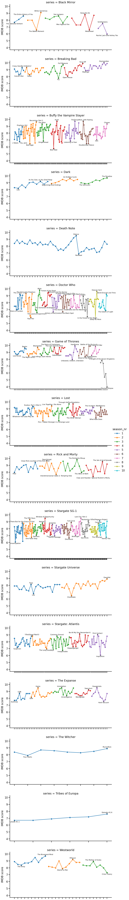

Investigating TV Series ratings using IMDB
[1]:
import imdb
import numpy as np
import pandas as pd
import seaborn as sns
import matplotlib.pyplot as plt
import matplotlib.patheffects as PathEffects
from tqdm.auto import tqdm
[2]:
sns.set_context('talk')
Load ratings
[3]:
query_list = [
'Lost',
'Game of Thrones',
'Stargate SG-1',
'Stargate: Atlantis',
'Stargate Universe',
'Westworld',
'Black Mirror',
'Breaking Bad',
'The Witcher',
'Dark',
'The Expanse',
'Buffy the Vampire Slayer',
'Tribes of Europa',
'Death Note',
'Rick and Morty',
('Doctor Who', 2005),
]
[4]:
ia = imdb.IMDb()
[5]:
def match_series(query, entry):
year = None
if not isinstance(query, str):
query, year = query
match = True
match &= entry['title'] == query # must match query
match &= entry['kind'] == kind # must be TV series
match &= entry.has_key('year') # exclude weird entries without year
if entry.has_key('year') and year is not None:
match &= entry['year'] == year
return match
[6]:
kind = 'tv series'
series_list = [
x
for query in tqdm(query_list)
for x in ia.search_movie(query if isinstance(query, str) else query[0])
if match_series(query, x)
]
assert len(query_list) == len(series_list)
[7]:
series_list
[7]:
[<Movie id:0411008[http] title:_"Lost" (2004)_>,
<Movie id:0944947[http] title:_"Game of Thrones" (2011)_>,
<Movie id:0118480[http] title:_"Stargate SG-1" (1997)_>,
<Movie id:0374455[http] title:_"Stargate: Atlantis" (2004)_>,
<Movie id:1286039[http] title:_"Stargate Universe" (2009)_>,
<Movie id:0475784[http] title:_"Westworld" (2016)_>,
<Movie id:2085059[http] title:_"Black Mirror" (2011)_>,
<Movie id:0903747[http] title:_"Breaking Bad" (2008)_>,
<Movie id:5180504[http] title:_"The Witcher" (2019)_>,
<Movie id:5753856[http] title:_"Dark" (2017)_>,
<Movie id:3230854[http] title:_"The Expanse" (2015)_>,
<Movie id:0118276[http] title:_"Buffy the Vampire Slayer" (1997)_>,
<Movie id:9184982[http] title:_"Tribes of Europa" (2021)_>,
<Movie id:0877057[http] title:_"Death Note" (2006)_>,
<Movie id:2861424[http] title:_"Rick and Morty" (2013)_>,
<Movie id:0436992[http] title:_"Doctor Who" (2005)_>]
[8]:
tmp = []
for series in tqdm(series_list, desc='Series'):
tqdm.write(series['title'])
ia.update(series, 'episodes')
for season_nr in series['episodes']:
season = series['episodes'][season_nr]
for episode_nr in series['episodes'][season_nr]:
episode = season[episode_nr]
tmp.append(
{
'series': series['title'],
'season_nr': season_nr,
'episode_nr': episode_nr,
'episode': episode['title'],
'rating': episode.get('rating', np.nan),
'date': pd.to_datetime(episode.get('original air date')),
# 'raw': series.data['episodes'][season][episode]
}
)
df = pd.DataFrame(tmp).sort_values(by=['series', 'season_nr', 'episode_nr'])
df['idx'] = pd.Categorical(df['season_nr'].map(str) + ':' + df['episode_nr'].map(str))
# fix for latest seaborn version (otherwise all cetegory levels are plotted for all series)
df['idx'] = df['idx'].astype(str)
# only display ten seasons to not break color palette
df = df[(df['season_nr'] >= 1) & (df['season_nr'] <= 10)]
Lost
Game of Thrones
Stargate SG-1
Stargate: Atlantis
Stargate Universe
Westworld
Black Mirror
Breaking Bad
The Witcher
Dark
The Expanse
Buffy the Vampire Slayer
Tribes of Europa
Death Note
Rick and Morty
Doctor Who
[9]:
df.head()
[9]:
| series | season_nr | episode_nr | episode | rating | date | idx | |
|---|---|---|---|---|---|---|---|
| 572 | Black Mirror | 1 | 1 | The National Anthem | 7.701235 | 2011-12-04 | 1:1 |
| 573 | Black Mirror | 1 | 2 | Fifteen Million Merits | 8.101235 | 2011-12-11 | 1:2 |
| 574 | Black Mirror | 1 | 3 | The Entire History of You | 8.601235 | 2011-12-18 | 1:3 |
| 575 | Black Mirror | 2 | 1 | Be Right Back | 8.001235 | 2013-02-11 | 2:1 |
| 576 | Black Mirror | 2 | 2 | White Bear | 8.001235 | 2013-02-18 | 2:2 |
Visualize results
[10]:
def annotate_episode(entry, ax, m):
return ax.annotate(
entry.episode,
xy=(entry.idx, entry.rating),
xytext=(0, 10 * m),
xycoords='data',
textcoords='offset points',
fontsize=10,
ha='center',
va='center',
arrowprops=dict(arrowstyle='->'),
path_effects=[PathEffects.withStroke(linewidth=3, foreground='w')],
)
[11]:
g = sns.FacetGrid(
df.dropna(),
row='series',
hue='season_nr',
sharex=False,
sharey=True,
aspect=2,
height=5,
)
g.map_dataframe(sns.lineplot, x='idx', y='rating', marker='o', estimator=None)
g.set_xticklabels([])
g.set_ylabels('IMDB score')
g.add_legend()
# annotate episodes
for (i, j, k), data in g.facet_data():
# row, col, hue
ax = g.facet_axis(i, j)
if not data.empty:
annotate_episode(data.loc[data['rating'].idxmax()], ax, 1)
annotate_episode(data.loc[data['rating'].idxmin()], ax, -1)
